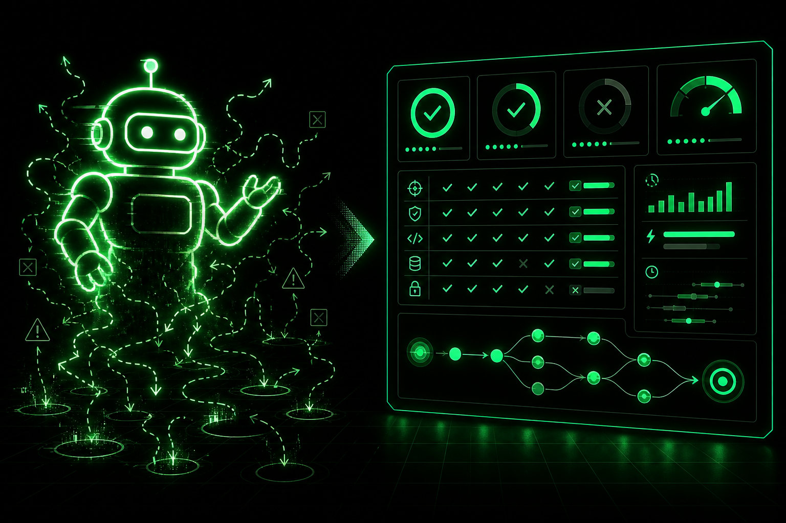

Autonomous Agents Are Overhyped. Evaluation Is Underrated.
The "let agents run everything end to end" pitch keeps getting the attention. The boring evaluation and observability work is what actually decides whether a system survives production.